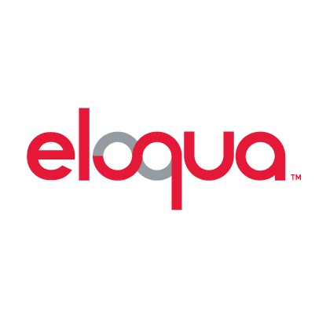
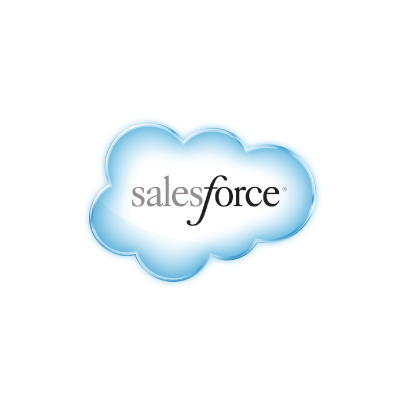

We've managed million dollar Fortune 500 retainers. We know a thing or two about providing results when it matters.
Campaigns, Programs, Lifecycles, Workflows, Drips, Nurtures... we've seen it all.
Our team lives and breaths data — it's the roadmap to success. Treasures be buried in em' bits!
We've sent about half a billion emails. Over 40 countries have read them.
Optimized for mobile? Our emails are so optimized an astronaut could read them through their google glasses on a moon walk.
We're the "one-stop shop" for modern marketers!
You see a funnel – we see a machine starving for food. Our in-house UX designers know how to feed that beast.
Don't be fooled – we're not just funnel experts, we're long-time nerds with more tips and tricks than a one legged sailor.
The IP User Journey methodology will keep your machine happy for years to come.
Dan leverages over a decade of technical expertise to create simple solutions for complex problems. From developing games to making marketing and sales technology work better, he always keeps an eye toward future compatibility and relevancy. His experience in coding and consulting has earned him his technical entrepreneur stripes.
In his ventures he has always found passionate and obsessed developers, technicians and solution architects to share in the fun. Supporting and guiding these experts is how he thrives and provides his clients the best fusion of creativity and functionality to achieve results.
Dan has made marketing and sales technologies rev higher and run stronger for great organizations, such as: Seagate, Informatica, Isilon, Fortify Software, Webtrends, Nimbus, ActiveNetwork, Quark, MicroScan, Wacom, Fluke Networks, Fortrust, and Netgear.